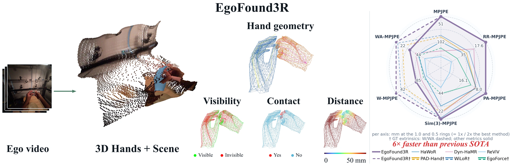
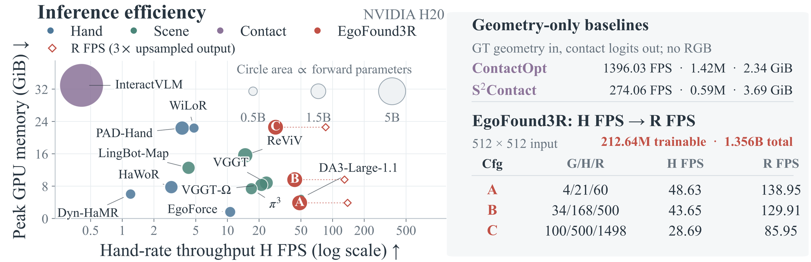
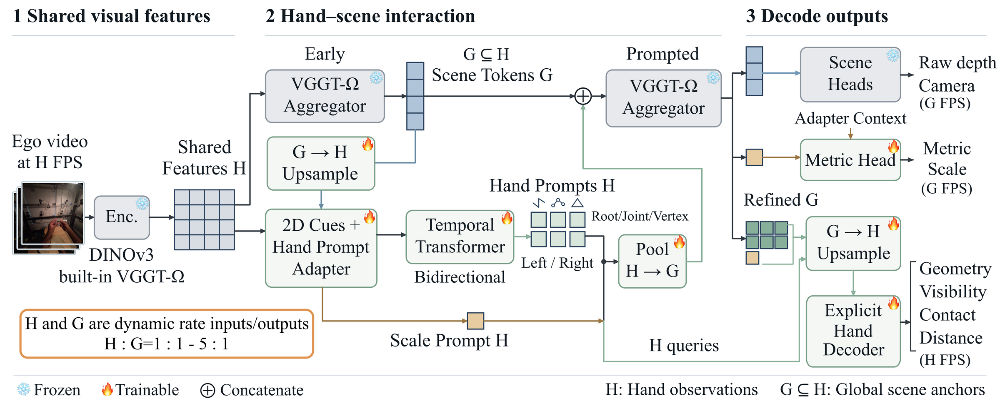

Abstract
Egocentric video has become a primary source of supervision for embodied models, and its value rests on recovering hand motion in world coordinates, which camera motion and hand occlusion make difficult. Existing reconstruction pipelines typically separate hand and scene estimation, leave interaction attributes to separate task-specific models, and invoke several models per video, so no prior reconstruction model estimates these attributes and throughput becomes a practical constraint on large-scale annotation. We therefore introduce EgoFound3R, a unified end-to-end model that estimates world-space hand geometry in a metric scale shared with the scene, and predicts point-wise interaction attributes, including visibility, contact, and distance.
The model integrates three designs: (i) structured hand prompts that transfer pretrained geometric priors to world-space hand reconstruction; (ii) an explicit hand representation that decodes hand geometry and interaction attributes; and (iii) a shared-parameter multi-rate design that lowers inference cost. Together, these designs predict hand geometry and point-wise attributes in one pass. On OakInk-v2, TACO, and HOI4D, EgoFound3R reduces the mean per-joint position error (MPJPE) by 43.2%, 22.4%, and 11.6% over previous methods and predicts point-wise contact and distance alongside the geometry in the same pass, while attaining approximately 6× higher throughput.
Key Results
Hand accuracy
43.2%
MPJPE reduction over previous methods on OakInk-v2, together with 22.4% on TACO and 11.6% on HOI4D.
Throughput
28.69–48.63 FPS
Hand-rate throughput (H FPS) at 512×512 on one NVIDIA H20 across the three configurations. The default runs at 28.69 FPS, 5.97× the 4.81 FPS of WiLoR, and the lightest reaches 48.63 FPS.
Single model
1 pass
World-space hand geometry with point-wise visibility, contact, and distance in one end-to-end forward pass.

Method Overview

Overview of EgoFound3R. Egocentric video input is encoded at the hand rate H, and the built-in DINOv3 features of the frozen VGGT-Ω backbone provide the shared visual features, from which an adapter builds structured root, joint, and surface prompts. A bidirectional temporal Transformer links the two hands across H, and pooling neighboring prompts yields global scene anchors G ⊆ H at an adjustable H:G ratio. The prompted VGGT-Ω aggregator drives the explicit hand head that decodes hand geometry, visibility, contact, and distance, and the scene and metric heads that place the hands in world coordinates.
Demo Videos
In-the-wild egocentric sequences reconstructed end-to-end by a single EgoFound3R model.
Left: the monocular egocentric RGB input. Middle: point-wise geometry, visibility, contact, and distance. Right: the reconstructed hands placed in the scene from four viewpoints.
Qualitative Results
Camera-space panels compare hand geometry and the point-wise attributes (visibility, contact, distance) between EgoFound3R (Pred) and the ground truth (GT). World-space panels render the reconstructed hands from five viewpoints, pink for the left and blue for the right. Use the arrows or the sequence chips to switch between clips.
BibTeX
@article{fu2026egofound3r,
title={EgoFound3R: End-to-End Egocentric Hand Reconstruction in World Space with Point-Wise Interaction Attributes},
author={Fu, Hongming and Shi, Jingcheng and Wang, Wenjia and Zuo, Binhua and Zhao, Bo},
year={2026}
}